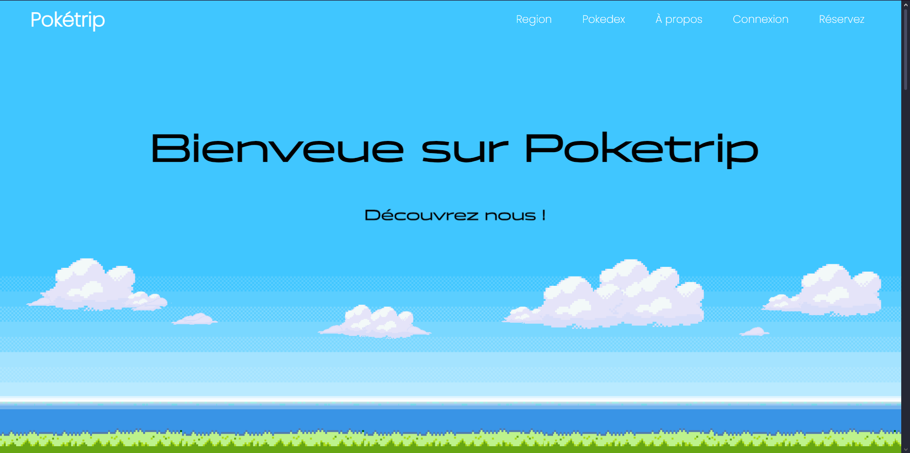
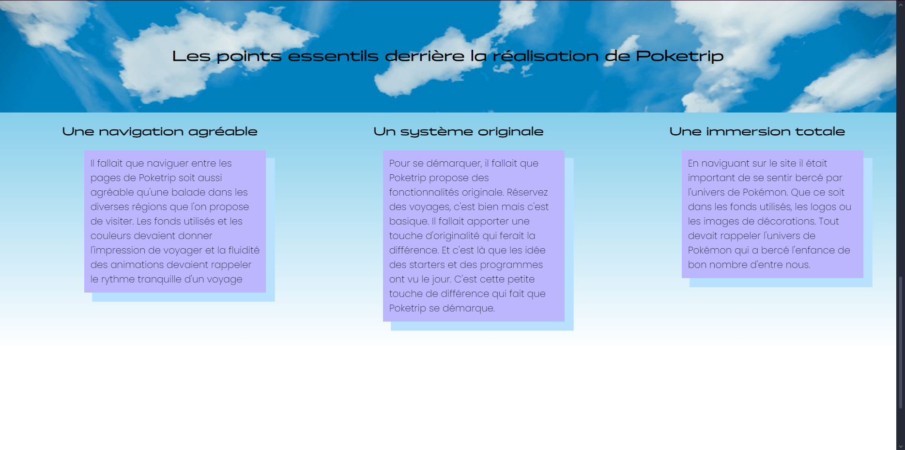

Resaweb
Resaweb a été le premier vrai site web que j'ai créé seul. Il a été développé dans le cadre d'un projet scolaire, servant de projet final de développement web pour ma première année dans le programme BUT. Resaweb est un site dynamique utilisant une base de données. Les langages utilisés étaient HTML, CSS et surtout PHP, qui s'est avéré très utile.
Resaweb a été conçu pour être un site de réservation en ligne. Mon choix de thème a été inspiré par un souvenir d'enfance : Pokémon. Je voulais créer un site qui, tout en le naviguant, plonge immédiatement les utilisateurs dans l'univers de la franchise. Mon objectif était que le site soit dynamique, interactif, coloré et, surtout, fonctionnel.
